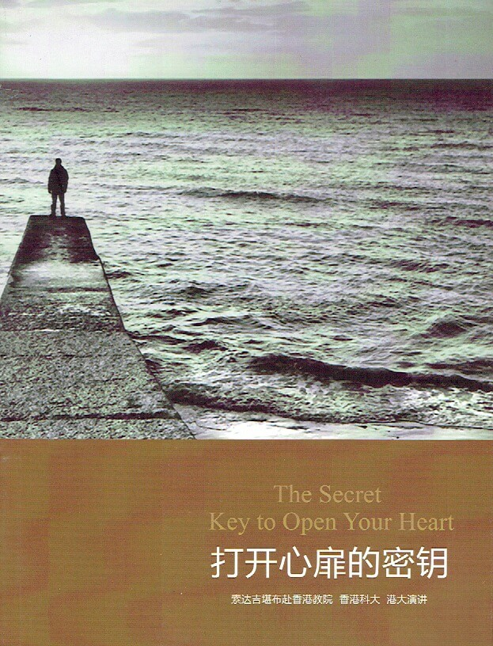
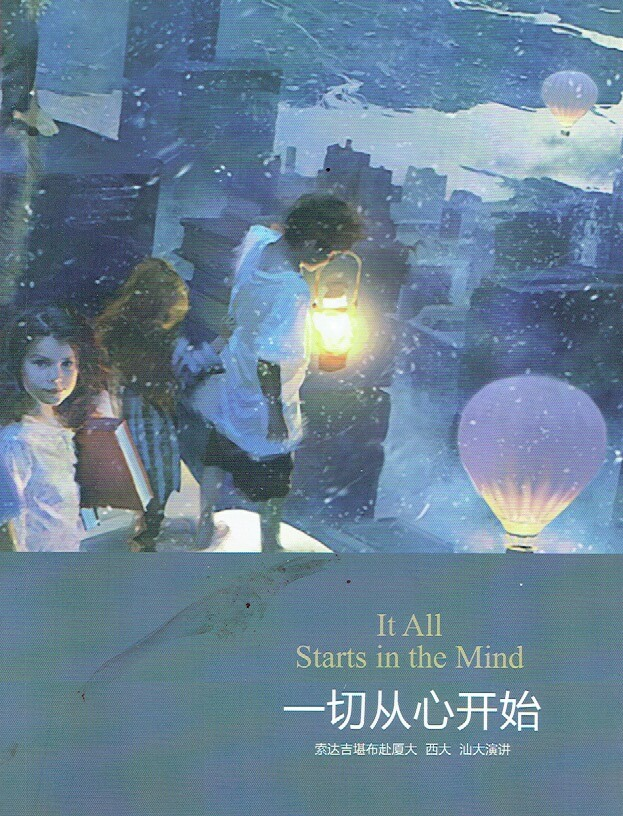
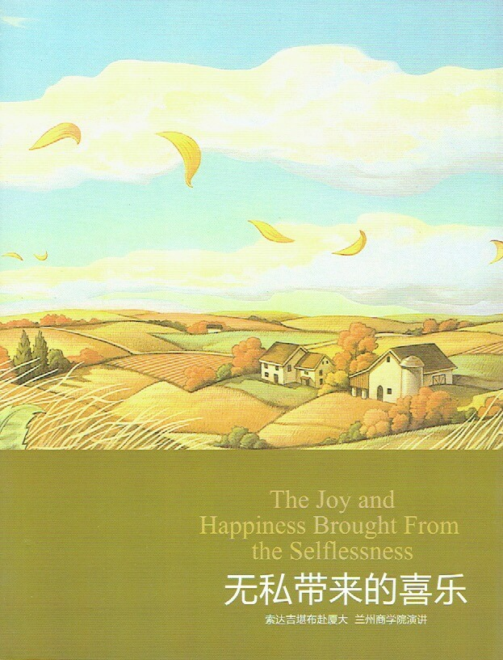
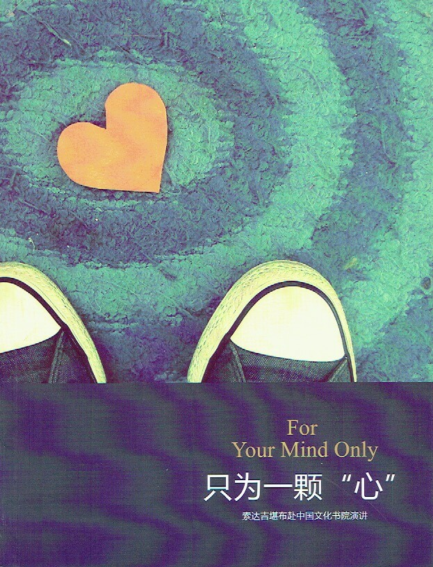
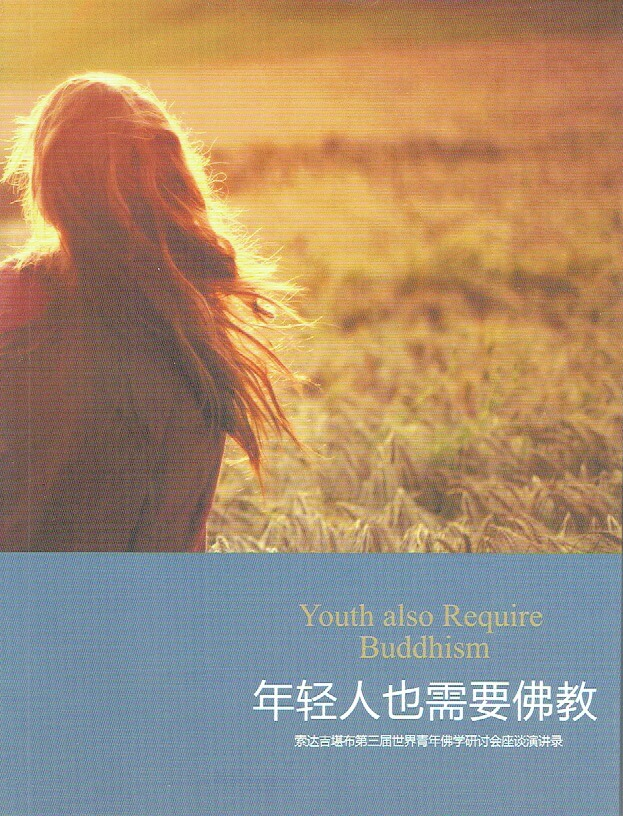

1:心灵的诺亚方舟
在线观看
《心灵的诺亚方舟》主要收录了2010年6月索达吉堪布应邀前往北京，参加第四届“国际公益慈善论坛”的研讨，后分别在北大、清华与部分知识分子就大乘佛教的理念，进行互相交流、沟通的精彩内容。
3:心病还需心药医
 在线观看
在线观看
索达吉堪布于2011年6月应邀前往浙大、华中师大、中大的演讲内容，主要揭示了大乘佛教对当今时代的重要性，以及在这个纷繁复杂的世间上，如何调伏自心、对治烦恼的殊胜方法。
6:寻觅爱的足迹
在线观看
索达吉堪布在2011年11月应邀在青海师范大学、西安交通大学、山东大学的三场演讲及其现场问答，主要阐述了佛教的慈悲观、利他观，并说明这是当前社会不可缺少的一剂良药。
8:打开心扉的密钥

在线观看
索达吉堪布在2011年11月应邀在香港教育学院、香港科技大学、香港大学的三场演讲及其精彩问答，主要阐述了人生如梦、慈悲观、如来藏等方面的问题。
9:一切从心开始

在线观看
2012年索达吉堪布应邀前往厦门大学、广西大学、汕头大学，与众多知识分子互相交流。这里收录了堪布如何结合佛法的智慧分析爱情、环保、幸福等一系列问题。
10:无私带来的喜乐

在线观看
2012年，索达吉堪布应邀前往慈慧基金会、厦门大学、兰州商学院，与众多知识分子互相交流。
11:发掘永远的财富
在线观看
2012年7月，索达吉堪布应邀前往北京大学汇丰商学院、清华大学职业经理训练中心、上海交通大学，进行了三场精彩演讲，并针对大家的各种疑惑，现场作了随机问答。
14:只为一颗心

在线观看
2012年12月，索达吉堪布应邀前往中国文化书院，就一个修行人该如何依照次第修行，介绍了大圆满前行的修法，同时也解答了在当前环境中，一般人怎样才能将生活与修行结合等疑惑。讲座及问答之余，堪布还带着学员进行了禅修。
17:寻觅失落的文明
在线观看
2013年，索达吉堪布应邀前往美国乔治华盛顿大学、美国乔治城大学、哈佛大学、哥伦比亚大学、美国科罗拉多大学、德国马普研究所、德国哥廷根大学，就藏地幸福密码、如何观修自他交换的菩提心、藏传佛教的包容性、藏文化与环境等课题做了演讲与问答。
19:走近藏传佛教
 在线观看
在线观看
2013年，索达吉堪布应邀前往华南农业大学大学、台湾华梵大学、国际藏传佛教研究会，就汉藏佛教的文化交流、佛教的辩论方法、及藏传佛教对现代文明的重要性等课题做了演讲与问答。
20:年轻人也需要佛教

在线观看
2013年7月索达吉堪布应邀赴香港参加第三届世界青年佛学研讨会，此次聚会云集了国内外的众多知识分子，是一次跨宗教、跨文化的交流盛会。堪布就“藏传佛教的学修体系”和“为什么要利他”做了专题演讲，解答了与会者的疑问，并亲自教授大家禅修要诀。 堪布以简洁朴实之语言所揭示的佛法的独特魅力和永久价值，引人深思、给人启迪，很多人以 此缘起而迈步新的人生里程。追随书中堪布的法语，开始一次喜悦的精神之旅吧！
21:困惑时代的幸福
在线观看
滋心养智——华东师范大学演讲
华东师范大学问答
大学生如何面对心理压力——四川大学演讲
四川大学问答
戒定慧与人生幸福——江西财经大学演讲
江西财经大学问答
22:一切并不神秘
在线观看
台湾师范大学佛学问答
藏文化的特色——台湾师范大学演讲
台湾大学佛学问答
神秘的修心之路——台湾大学演讲
台北大学问答
生命科学与价值——台北大学演讲
 《智海浪花》是慈悲的上师索达吉堪布整理了125位从高校出来的知识分子的学佛历程，与大家一起分享各自的学佛心得。言语朴素，没有很多佛法词汇，出乎意料地也能很合现代人的根器，可见上师为打开众生的方便之门是如此的用心良苦。
《智海浪花》是慈悲的上师索达吉堪布整理了125位从高校出来的知识分子的学佛历程，与大家一起分享各自的学佛心得。言语朴素，没有很多佛法词汇，出乎意料地也能很合现代人的根器，可见上师为打开众生的方便之门是如此的用心良苦。